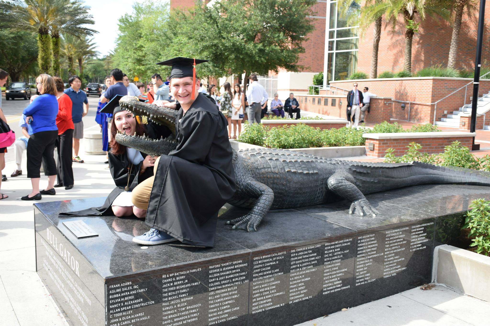
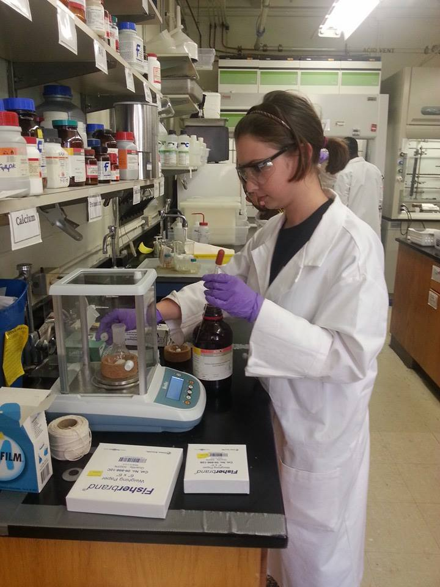
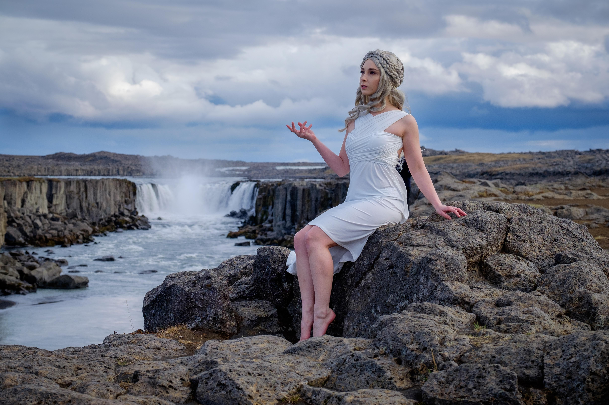

I’ve been told I’m a bit of a “renaissance woman” and software development is my latest endeavor. After moving to Seattle WA in January 2020, I decided it was time to to start my new life fresh with an equally new career. I’m grateful to have the means to pursue this opportunity as my small-town, Florida-girl legs get used to all of the city’s hills and I try to wrap my head around not needing air conditioning in my apartment.
January 2018 - December 2019
July 2013 - August 2017
August 2015 - August 2017
Major: Pharmaceutical Sciences with a concentration in Forensic Drug Chemistry
Certificates: Forensic Toxicology and Veterinary Forensic Sciences
Elizabeth R. Chapin Research Fellow
August 2011 - May 2015
Majors: Chemistry and Anthropology
Minor: French
Certification: American Chemical Society
Work in Progress Website Exercises
We all have to start somewhere!
Wikipedia Rebuild - Repository
A recreation of the Wikipedia Homepage created to practice Bootstrap grid styling. The use of nesting to recreate the intended layout was achieved, but more styling is needed.
Languages: HTML, CSS, and Markdown
Barcelona Vacation Site - Repository
A webpage promoting tourism in Barcelona. The website demonstrates an introduction to Bootstrap styling, with examples of panels and grid responsiveness.
Languages: HTML, CSS, and Markdown
Counter-Strike Blog - Repository
A small blog dedicated to one of my pair partner's favorite video games - Counter-Strike. Styling was done in CSS before the introduction of Bootstrap. Instead, the box model, media queries, and floats were employed.
Languages: HTML, CSS, and Markdown
Animal Shelter Webpage - Repository
This website demonstrates the use of HTML div elements whose associated classes allow for styling with CSS. The exercise specifically targeted cascading, inheritance, and specificity.
Languages: HTML, CSS, and Markdown
A website created for my cat, Zora. It is an early attempt at linking a CSS stylesheet to an HTML file and experiments with the different properties available for customization.
Languages: HTML and CSS
Favorite Things (preview not available) - Repository
A website listing my favorite people and things. This demonstrates the use of HTML elements and served as an early exercise in using Git commits and pushing code to GitHub.
Languages: HTML and Markdown
The current version of this website was made before I began classes at Epicodus. I look forward to incorporating what I now know about Bootstrap into the styling. It was a struggle to position basic elements without knowledge of its grid system.
Languages: HTML and CSS
Check out my GitHub Profile for more!
 As fulfilling as my work in toxicology was, ever since I finished my degree in chemistry there was a nagging sense that this was not where I belonged. I only began my pursuit of chemistry because a few friends were taking advanced classes in high school and I wasn’t sure what to pick. My path forward felt like an obligation. I was tethered to a choice I made at sixteen. Ever since I've been afraid to branch out, explore the unknown, and change. After a point I felt trapped. Was it too late to turn around and start over?
My breaking point was not getting the forensic toxicology job that I had lined up before moving to Seattle. There were not many other options and the weight of my failure was honestly nothing short of devastating. But, it also meant I was free. Free to finally run down a new path and move towards a new goal. One that felt more my own. The flexibility, the job opportunities, the diverse career possibilities. With a few tools at my disposal, a few languages under my belt, and an unyielding passion for problem-solving I am able to do anything. I can be anyone.
I've been dressing up as fictional characters and attending conventions since the summer of 2009.
The logic was "Halloween all the time? Sign me up!" And I haven't been able to stop since!
Wig Styling - Sewing - SFX Makeup - Prop Making
Click Here if you'd like to follow these personal adventures more closely!
I've been adhering to the Blogilates program on YouTube for almost five years now.
As a pretty inactive, awkward kid I never found exercises that appealed to me. Staying inside to read or play video games, and more importantly- escape the Florida heat, was always more appealing. I'm glad that I discovered something as an adult to keep me healthy, mentally and emotionally. It even meets the old indoors requirement!
I caught the travel bug from my partner Nick. His love of the outdoors and my passion for costuming has lead to some pretty interesting experiences!
Curiouser and curiouser!